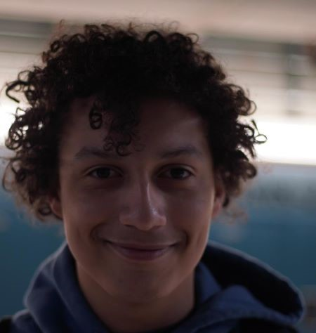

Click each image to learn more anot us
|  | |
|
Hi, I'm Madisyn!
I'm the web designer/developer for the Tidy for Turtles website (The site you're on right now). I was also the planner and artist for this project. Aside from computer science, I'm interested in reading and baking. P.S. I DID NOT draw Mr. King's arms Email: 104810@gltech.org |
Hello, I'm Javier!
I'm the game designer/developer for Tidy for Turtles. As much as I love computer science and programming, my favorite things to do is sleep. If I'm not snoring somewhere, you can find me making music. P.S. I'm the one responsible for drawing Mr. King's crazy arms Email: 104851@gltech.org |
Hi, I'm Madisyn!
I'm the web designer/developer for the Tidy for Turtles website (The site you're on right now). I was also the planner and artist for this project.
Aside from computer science, I'm interested in reading and baking.
P.S. I DID NOT draw Mr. King's arms
Email: 104810@gltech.org
Hello, I'm Javier!
I'm the game designer/developer for Tidy for Turtles as well as the composer. As much as I love computer science and programming, my favorite things to do is sleep. If I'm not snoring somewhere, you can find me making music.
P.S. I'm responsible for drawing Mr. King's crazy arms
Email: 104851@gltech.org
Today's beaches are littered with trash that is harming marine ecosystems.
Everday sea turtles are dying because they are accidently consuming garbage.
Not only is beach pollution harming adult sea turtles, but hatclings as well.
The waste that overwhelms many beaches is interferring with baby sea turtles
making their way to the beach, preventing them from starting their turtle-rific lives.
This pending environmental issue is the inspiration behind our game which is based on
well known platformer games such as Super Mario.